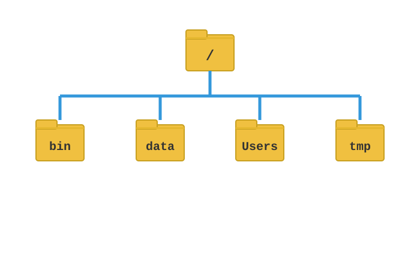
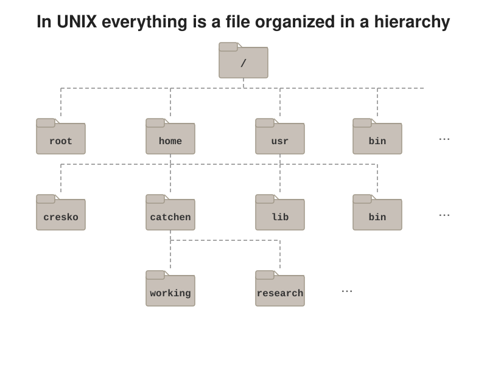
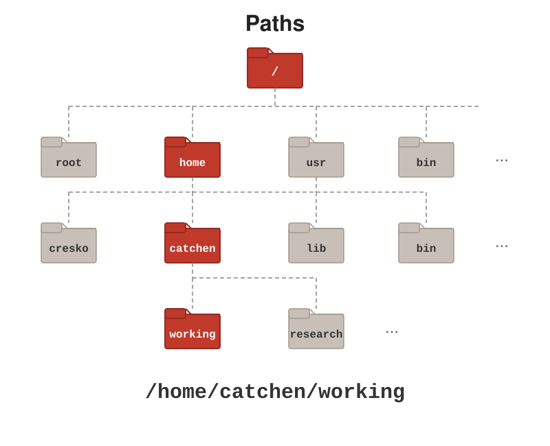
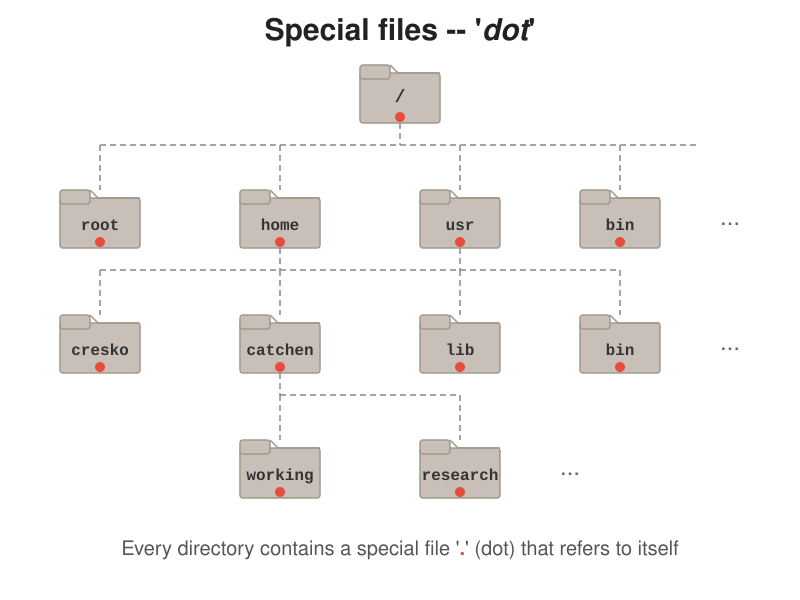

4 Unix Fundamentals
After completing this chapter, you will be able to:
- Explain what Unix is and why it’s important for scientific computing
- Access the shell on your operating system
- Navigate the file system using command-line tools
- Understand the anatomy of shell commands
- Create, move, copy, and delete files and directories
Unix is the operating system of choice in data science and scientific computing. In this chapter, we introduce you to the Unix way of thinking using a practical example: how to keep a data analysis project organized. Along the way, you will learn the most commonly used commands, though we won’t cover every detail—Unix is vast, and mastery comes through practice.
We encourage you to keep learning, especially when you find yourself reaching for the mouse too often or performing repetitive tasks. In those moments, there is almost certainly a more efficient way to accomplish your goal using Unix. As you work through this book and beyond, consider exploring additional resources such as the interactive tutorials at Codecademy, edX, or Coursera. For reference material, Bite Size Linux and Bite Size Command Line by Julia Evans are particularly clear and accessible.
When searching for Unix resources, keep in mind that you may encounter terms like Linux, the shell, and the command line. These all refer to aspects of what we’re learning here: a series of commands and a philosophy that enables you to organize files and automate tasks without relying on graphical interfaces.
4.1 What Is Unix?
Unix is a family of operating systems originally developed at Bell Labs in 1969 and publicly released in 1973 (Kernighan & Pike, 1984). Its command-line tools remain the everyday working environment of computational biology (Buffalo, 2015). What began as a project for a single computer has become the foundation of modern computing infrastructure.
Today, Unix and its derivatives power:
- Most web servers on the internet
- Scientific computing clusters (including Talapas)
- macOS (Apple’s desktop operating system)
- Android phones (via the Linux kernel)
- Embedded systems in everything from routers to cars
Linux is an open-source implementation of Unix principles that has become the dominant operating system for scientific computing. When we refer to “Unix commands” in this book, the same commands work on Linux, macOS, and Windows Subsystem for Linux (WSL).
Learning Unix is an investment that pays dividends throughout your career. The commands you learn today will work on systems you encounter decades from now—Unix’s longevity is remarkable in the fast-changing world of technology.
The Unix Philosophy
The tools we use in Unix embody a design philosophy that emerged from Bell Labs in the 1970s:
Do One Thing And Do It Well
Each Unix command is designed to perform a single task excellently. By combining simple, well-designed tools, you can build powerful and complex workflows. This “minimalist and modular” approach means:
- Tools are easier to learn (each does one thing)
- Tools are easier to combine (standardized input/output)
- Complex tasks become chains of simple operations
You’ll see this philosophy throughout Unix: cat just displays files, grep just searches for patterns, sort just sorts lines. The magic happens when you combine them, which is the subject of Chapter 7.
4.2 The Shell: Your Interface to Unix
Instead of clicking, dragging, and dropping to organize our files and folders, we will be typing Unix commands into the terminal. The way we do this is similar to how you might type commands into an R console, but instead of generating plots and statistical summaries, we will be organizing files on our system and building powerful data pipelines.
The shell is the program that interprets your commands and communicates with the operating system. Think of it as a translator between human-readable instructions and the computer’s internal operations. When you open a terminal, you’re interacting with the shell.
While graphical user interfaces (GUIs) like Finder on Mac or File Explorer on Windows are intuitive for casual use, the shell offers:
- Speed: Type commands faster than clicking through menus
- Power: Access to thousands of specialized tools
- Automation: Script repetitive tasks (see Chapter 10)
- Remote Access: Work on distant computers identically to local ones
- Reproducibility: Document exactly what you did
Bash: The Default Shell
Bash (Bourne Again SHell) is the default shell on most Linux systems, including Ubuntu under WSL and the Talapas cluster, and it is the shell this course is written for. Modern macOS defaults to zsh instead. For everything we do in this course the two are nearly identical—the commands, pipes, and scripts you learn here work the same in either—so Mac users can simply use zsh. Other shells exist (fish, tcsh), but Bash is the most widely used and what you’ll encounter on computing clusters.
Accessing the Shell
How you access the shell depends on your operating system:
- macOS
- Open the Terminal application (Applications → Utilities → Terminal) or use a third-party terminal like iTerm2.
- Linux
- Open your distribution’s terminal application, often called “Terminal” or “Console.”
- Windows
- After installing WSL (see Section 1.5.3), search for “Ubuntu” or your installed Linux distribution in the Start menu.
When you open the terminal, you’ll see a prompt indicating the system is ready for your command:
The prompt typically shows your username, the computer name, your current directory (~ means your home directory), and a $ symbol indicating you’re a regular user (a # would indicate administrator/root access).
Once you have a terminal open, you can start typing commands. You should see a blinking cursor at the spot where what you type will appear. This position is called the command line. Once you type something and press Enter (or Return on Mac), Unix will try to execute the command. Try this simple example:
The echo command is similar to print() in R—it simply displays the text you provide. Notice that you can’t use the mouse to move around in the terminal the way you might in a word processor. You have to use the keyboard. To recall a command you previously typed, use the up arrow key. This is one of many conveniences that make the command line efficient once you learn its patterns.
Throughout this book, we show Unix commands with a $ prefix to indicate the prompt. You don’t type the $—it’s just showing where the command begins. Lines without $ represent output from commands.
Essential Keyboard Shortcuts
Learning these shortcuts (Table 4.1) will dramatically speed up your command-line work:
| Shortcut | Action |
|---|---|
Tab |
Auto-complete commands, file names, and paths |
↑ / ↓
|
Scroll through command history |
Ctrl+A |
Move cursor to beginning of line |
Ctrl+E |
Move cursor to end of line |
Ctrl+U |
Delete everything before cursor |
Ctrl+K |
Delete everything after cursor |
Ctrl+W |
Delete word before cursor |
Ctrl+R |
Search through command history |
Ctrl+C |
Cancel current command |
Ctrl+L or clear
|
Clear the terminal screen |
For a complete list of keyboard shortcuts, see Appendix A.
Tab completion is your best friend! Start typing a file name and press Tab—the shell will complete it for you. If there are multiple matches, press Tab twice to see all options. This prevents typos and saves enormous amounts of typing.
4.3 Anatomy of a Shell Command
Every shell command follows a consistent structure (Figure 4.1):

Let’s break this down:
- Prompt
-
Printed by the shell, not typed by you. It signals that the computer is ready to accept a new command (
$for a regular user,#for the administrator). - Command
- The program or built-in function you want to run. This is required.
- Options (also called flags)
-
Modify the command’s behavior. Usually preceded by
-(single letter) or--(full word). Optional. - Arguments
- What the command should operate on—typically file or directory names. Sometimes optional.
For example:
Here, ls is the command (list directory contents), -l is an option (use long format with details), and Documents is the argument (which directory to list).
Options can often be combined. For example, ls -l -h -a can be written as ls -lha. The order of combined options usually doesn’t matter.
Getting Help: The man Command
Every Unix command has a manual page accessible via the man command:
This opens the manual for ls, showing all available options and usage examples. Navigation within man:
- Space or f — Move forward one page
- b — Move back one page
-
/pattern — Search for “pattern” (press
nfor next match) - h — Show help for navigating the manual
- q — Quit and return to the shell
For a quicker summary, many commands support --help:
When you encounter an unfamiliar command, man should be your first stop. The manuals are comprehensive and authoritative—they’re written by the people who created the commands.
4.4 Understanding the File System
We refer to all the files, folders, and programs on your computer as the filesystem. In Unix, everything is organized as files within a hierarchical directory structure (Figure 4.2). Keep in mind that folders and programs are technically also files, but this is a detail we rarely think about. Understanding this structure is essential for navigation.

The Directory Tree
The first concept you need to grasp to become a Unix user is how your filesystem is organized. You should think of it as a series of nested folders, each containing files, folders, and executable programs.
In Unix, we refer to folders as directories. Directories that are inside other directories are called subdirectories. The entire file system branches from a single root directory, represented by /:
/
├── Users/
│ └── wcresko/
│ ├── Documents/
│ ├── Downloads/
│ └── projects/
├── Applications/
├── Library/
└── tmp/Figure 4.3 shows the same idea as a tree: the root directory / at the top, system directories and user home directories branching below it, and your own files nested deeper still.

/; user home directories sit under /Users (macOS) or /home (Linux).
Key directories include:
/- The root directory. Everything else is inside this.
/homeor/Users- Contains user home directories. Your files live here.
~-
Shorthand for your home directory (e.g.,
/home/wcresko). /tmp- Temporary files that may be deleted on reboot.
The home directory is where all your personal files are kept, as opposed to system files that come with your computer. Your home directory is typically named after your username. For example, if your username is wcresko, your home directory might be /home/wcresko on Linux or /Users/wcresko on macOS.
To understand the hierarchical nature of the filesystem, imagine you want to delete a file called cv.tex that lives in a resumes folder, which is inside a docs folder, which is inside your home directory. In a graphical file manager, you would double-click docs, then resumes, then drag cv.tex to the trash. This sequence of clicks mirrors the hierarchical path: cv.tex is inside resumes, which is inside docs, which is inside your home directory.
In Unix, we express this same relationship as a path: ~/docs/resumes/cv.tex. The forward slashes separate each level of the directory tree, and ~ is shorthand for your home directory.
When using Windows Subsystem for Linux (WSL), your Unix home directory is different from your Windows home directory. The Unix home will be something like /home/yourusername, while your Windows Documents folder is typically accessible at /mnt/c/Users/yourusername/Documents. Keep this distinction in mind when organizing files.
Absolute vs. Relative Paths
A path specifies the location of a file or directory. The name comes from the fact that the path string spells out the route you need to follow to get to a location from some starting point. Paths come in two forms:
- Absolute Paths
-
Start from the root directory (
/). They work from anywhere because they specify the complete location from the root of the filesystem. An absolute path always begins with/or~.
- Relative Paths
-
Start from your current directory. Shorter but depend on where you are. If a path does not start with
/or~, Unix assumes it is relative to your current working directory. Figure 4.4 shows how an absolute path is built up from the root of the tree.

/) down through each level to the file; the highlighted route spells out the path one directory at a time.
Unix provides shorthand symbols for common directory references:
| Symbol | Meaning |
|---|---|
. |
Current directory (where you are now) |
.. |
Parent directory (one level up) |
~ |
Your home directory |
- |
Previous directory (where you were before) |
These symbols can be combined in paths. For example, ../.. means “go up two directories,” and ~/projects means “the projects folder in my home directory.”
The Special Entries . and ..
The first two symbols in Table 4.2 are not just shorthand: they are real entries that exist in every directory. You can see them with ls -a, which shows hidden files (anything whose name begins with a dot):
The entry . (dot) refers to the directory itself, and .. (dot dot) refers to its parent (Figure 4.5). This is why cd .. moves you up one level: you are literally entering the .. entry of your current directory (Figure 4.6). It is also why you run a script in the current directory as ./script.sh, meaning “the file script.sh inside the directory I am in right now.”

., which points to the directory itself, and .., which points to its parent.

..: cd .. follows the parent link up one level in the tree, and a path such as ../other_dir goes up one level and then down into a sibling directory.
Use Tab completion! Start typing a file or directory name and press Tab to autocomplete. This saves typing and prevents errors.
4.6 Working with Files and Directories
Now that you can navigate, let’s learn to manipulate files and directories.
Creating Directories: mkdir
Creating Files: touch and nano
The touch command creates an empty file (or updates the timestamp of an existing file):
For files with content, use a text editor. nano is a simple terminal-based editor:
In nano: - Type your content normally - Ctrl+O saves the file (press Enter to confirm) - Ctrl+X exits nano
Copying Files: cp
Moving and Renaming: mv
The mv command both moves and renames files:
mv and cp will silently overwrite an existing file if you give two things the same name, and rm will delete whatever you tell it to. There is no “Are you sure?” dialog. Add -i (mv -i, cp -i, rm -i) to be asked before anything is overwritten or removed.
Deleting Files: rm and rmdir
The shell has no trash can! Deleted files are gone forever. Always double-check before using rm, especially with wildcards.
The -r (recursive) option with rm is powerful but dangerous. Consider using -i (interactive) to confirm each deletion when learning.
Viewing Files: cat, head, tail, less
In less: - Space or f — next page - b — previous page - /pattern — search forward - n — next search result - q — quit
File Information: wc
The wc (word count) command provides file statistics:
This shows: lines, words, and bytes. Useful options:
Finding Files: find
The find command searches for files and directories based on various criteria:
The find command is powerful for locating files across complex directory structures. Common options:
find options
| Option | Description |
|---|---|
-name |
Match filename (case-sensitive) |
-iname |
Match filename (case-insensitive) |
-type f |
Find files only |
-type d |
Find directories only |
-size +10M |
Larger than 10 megabytes |
-mtime -7 |
Modified within 7 days |
4.7 Naming Conventions
Before you start organizing projects with Unix, you should adopt a naming convention that you will use systematically for your files and directories. Good naming practices prevent countless problems and help you find files quickly, even months or years after creating them.
The Smithsonian Data Management Best Practices outlines five principles of file naming and organization:
- Have a distinctive, human-readable name that gives an indication of the content
- Follow a consistent pattern that is machine-friendly
- Organize files into directories that follow a consistent pattern
- Avoid repetition of semantic elements among file and directory names
- Have a file extension that matches the file format (never change extensions!)
For specific coding conventions, we recommend following the Tidyverse Style Guide, which provides consistent patterns for naming files and variables in R projects.
DO:
- Use lowercase letters, numbers, underscores (
_), and hyphens (-) - Use meaningful, descriptive names that indicate content
- Include dates in ISO format when relevant:
data_2024-01-15.csv - Use appropriate file extensions that match the format
DON’T:
- Use spaces (use
_or-instead) - Start names with
-(confused with command options) - Use special characters:
* ? [ ] ' " \ / < > | - Use extremely long names
Examples:
| Bad | Good | Why |
|---|---|---|
my data.csv |
my_data.csv |
Spaces cause problems in shell commands |
-results.txt |
results.txt |
Leading dash is confused with options |
data (copy).csv |
data_backup.csv |
Parentheses require escaping |
Joe's file.txt |
joes_file.txt |
Apostrophe causes quoting issues |
FINAL_v2_FINAL.csv |
analysis_2024-01-15.csv |
Date-based versioning is clearer |
4.8 Getting Help
Manual Pages
Every Unix command has a manual page accessible via man:
Manual pages can be dense. Look for: - NAME: What the command does - SYNOPSIS: How to use it - DESCRIPTION: Detailed explanation - OPTIONS: Available flags - EXAMPLES: If you’re lucky!
Press q to exit the manual.
Quick Help
Many commands support a --help option:
Searching for Commands
If you know what you want to do but not the command:
4.9 File Permissions and Ownership
Unix is a multi-user system, and every file has permissions controlling who can read, write, or execute it. Understanding permissions is essential for security and for running scripts (Section 10.2.2).
Understanding Permission Strings
When you run ls -l, you see permission strings like:
Let’s decode -rwxr-xr-x (Table 4.6):
-rwxr-xr-x
| Position | Meaning |
|---|---|
| 1st character | Type: - (file), d (directory), l (link) |
| Characters 2-4 |
Owner permissions: rwx
|
| Characters 5-7 |
Group permissions: r-x
|
| Characters 8-10 |
Others permissions: r-x
|
The three permission types are:
- r (read): View file contents or list directory
- w (write): Modify file or add/remove files in directory
- x (execute): Run file as program or enter directory
- -: Permission denied for that operation
So -rwxr-xr-x means: this is a regular file; the owner can read, write, and execute it; members of the group can read and execute it; and everyone else can read and execute it.
Changing Permissions: chmod
The chmod command changes file permissions. There are two notations:
Symbolic notation uses letters for who (u user/owner, g group, o others, a all) and operators for what (+ add, - remove, = set exactly):
Octal notation assigns each permission a value—read = 4, write = 2, execute = 1—and adds them up for each of the three sets. For example, rwx = 4 + 2 + 1 = 7 and r-x = 4 + 0 + 1 = 5 (Table 4.7):
chmod
| Number | Permission |
|---|---|
| 7 | rwx (read + write + execute) |
| 6 | rw- (read + write) |
| 5 | r-x (read + execute) |
| 4 | r– (read only) |
| 0 | — (no permissions) |
A few patterns cover almost every situation: 755 for scripts (you can modify, everyone can run), 644 for data files (you can modify, everyone can read), and 700 or 600 for directories and files that only you should touch.
Making Scripts Executable
The most common reason you will reach for chmod is to run a script you have written. A new text file is not executable, so trying to run it directly fails:
The #!/bin/bash line at the top (the “shebang”) tells Unix which program should interpret the script, and the ./ prefix says “the file in the current directory” (Section 4.4.3). Shell scripts are the subject of Chapter 10.
Changing Ownership: chown
The chown command changes file ownership:
Superuser Access: sudo
Some operations require administrator (root) privileges. The sudo command temporarily elevates your permissions:
Use sudo carefully! With great power comes great responsibility. Commands run with sudo can modify or delete system files, potentially breaking your computer. Always double-check commands before running them with sudo.
4.10 Preparing for a Data Science Project
Now let’s put these commands into practice by setting up a proper directory structure for a data science project. A well-organized project directory makes your work reproducible and easier to navigate.
We recommend creating a dedicated directory to hold all your projects. This keeps your work organized and separate from other files in your home directory:
For this example, let’s create a project analyzing gun violence data (based on a real project on GitHub). We’ll create subdirectories for raw data and processed data:
Our project structure now looks like this:
~/projects/
└── murders/
├── data/ # Raw data files
└── rdas/ # Processed R data files- Create a
projectsdirectory in your home folder to contain all your work - Give each project its own directory with a descriptive name
- Use consistent subdirectory names across projects (e.g.,
data,results,scripts,figures) - Keep raw data separate from processed data
- Consider adding a
README.mdfile to describe the project
From any terminal, you can navigate to this project by typing:
As your projects grow, you might expand this structure:
~/projects/
└── murders/
├── data/ # Raw, unmodified data
├── rdas/ # Processed R data objects
├── scripts/ # Analysis scripts
├── results/ # Analysis output
├── figures/ # Generated plots
└── README.md # Project descriptionThis organization keeps related files together, makes your analysis reproducible, and helps collaborators (including your future self) understand the project structure.
4.11 Advanced Unix Concepts
Most Unix implementations include a large number of powerful tools and utilities beyond what we’ve covered here. As you become more comfortable with the basics, you’ll want to explore these advanced topics. The main purpose of this section is to make you aware of what’s available; you can dive deeper as needed.
Wild Cards
One of the most powerful features of Unix is wild cards—special characters that match multiple files at once. Suppose you want to remove all temporary HTML files from a project. Removing them one by one would be tedious, but with wild cards you can match them all:
The * wild card matches any number of any characters (including none). The ? wild card matches exactly one character:
# All CSV files, all files starting with "data", all text and markdown files
$ ls *.csv
$ ls data*
$ ls *.txt *.md
# Match files like file-001.html, file-002.html, file-999.html
$ ls file-???.html
# sample1.txt, sample2.txt, ... but not sample10.txt
$ ls sample?.txt
# Remove all files starting with "temp"
$ rm temp*
# Match files with any extension
$ ls data.*Square brackets [ ] match any single character from a set or range:
Wild cards are expanded by the shell before the command runs, so they work with any command, not just ls:
Combining rm with * can be dangerous! The command rm * deletes everything in the current directory without asking for confirmation. Always use ls first to see what a wild card pattern matches before using it with rm, and consider rm -i for interactive confirmation when deleting with wild cards.
Environment Variables
Unix has settings that affect your command-line environment called environment variables. These are distinguished by a $ prefix. Some important ones:
# Your home directory
$ echo $HOME
/home/wcresko
# Your username
$ echo $USER
wcresko
# Your current shell
$ echo $SHELL
/bin/bash
# Where Unix looks for programs
$ echo $PATH
/usr/local/bin:/usr/bin:/bin
# Your current working directory (the same thing pwd prints)
$ echo $PWD
/home/wcresko/projects
# See all environment variables (there are many; page through them)
$ env | less
$ printenv HOMEEnvironment variables control how your shell behaves and where it looks for programs. The PATH variable is particularly important—it’s a colon-separated list of directories where Unix searches for executable programs.
You can also define your own variables. Assign with NAME=value (no spaces around the =) and refer to the value with a $ prefix:
A variable set this way is visible only to the current shell. To make it available to the programs you launch from that shell (R, Python, a script), prefix the assignment with export:
Shell variables are the building blocks of shell scripts, which are covered in Chapter 10.
Executables and the PATH
In Unix, all programs are files—they’re called executables. When you type ls, grep, or git, Unix runs an executable file. You can find where a program lives using which:
The PATH environment variable tells Unix where to look for executables. When you type a command, Unix searches through each directory in PATH until it finds a matching program:
Unix searches these directories in order. If you have your own scripts in ~/bin, you can add that directory to your PATH to make them accessible from anywhere.
Shells and Configuration Files
The shell is the program that interprets your commands. Bash (Bourne Again Shell) is the most common, but others exist like zsh (default on modern macOS) and fish. You can see which shell you’re using:
Your shell can be customized through configuration files that run when you open a terminal (Table 4.8):
| Shell | Configuration Files |
|---|---|
| Bash |
~/.bashrc, ~/.bash_profile
|
| Zsh |
~/.zshrc, ~/.zprofile
|
These files can set environment variables, define aliases (shortcuts for commands), and customize your prompt. For Bash, ~/.bashrc is read by interactive shells and ~/.bash_profile by login shells; on macOS with zsh, put the same lines in ~/.zshrc. Common customizations include:
After editing a configuration file, apply the changes either by opening a new terminal or by running:
Connecting to Remote Computers: ssh and scp
One of the main reasons to learn the shell is that it works the same way on a computer across the room or across the country. The ssh command (secure shell) opens a shell on a remote machine:
Once connected, everything in this chapter—pwd, ls, cd, mkdir, and the rest—works exactly as it does locally, except that the files live on the remote system. This is how you will use UO’s Talapas cluster (Chapter 15). Type exit to close the connection.
The scp command (secure copy) copies files between your computer and a remote one. Its syntax mirrors cp, with user@host: prefixed to the remote path:
For large or repeated transfers, rsync is more efficient because it copies only what has changed; see Section 15.5.3.
Commands Worth Learning
Several other commands are worth knowing about as you advance (Table 4.9); grep gets its own treatment in Chapter 9:
| Command | Description |
|---|---|
tar |
Archive files and directories into one file |
ssh |
Connect securely to another computer (Section 4.11.5) |
ln |
Create symbolic links (shortcuts to files) |
nano or vim
|
Edit files in the terminal |
awk |
Column-oriented text processing (covered in Section 9.10) |
sed |
Stream editor for text transformation (covered in Section 9.9) |
File Manipulation from R
You can also perform file operations from within R using functions like file.create(), file.copy(), file.rename(), and file.remove(). See ?files in R for the complete list. The unlink() function removes files and directories.
While not generally recommended, you can run Unix commands from R using the system() function:
This can be useful for integrating Unix tools into R scripts, but native R functions are usually preferable for portability.
4.12 Summary
This chapter covered the fundamentals of Unix navigation and file manipulation:
- The shell interprets commands and interfaces with the operating system
- Commands follow the pattern:
command -options arguments - The file system is a hierarchical tree starting at
/ - Navigation uses
pwd,ls, andcd - File operations include
cp,mv,rm,mkdir, andtouch - Every directory contains
.(itself) and..(its parent);cd ..moves up one level - Good naming conventions prevent problems
- Manual pages (
man) provide detailed help - Permissions (
rwxfor owner, group, and others) are changed withchmod;chmod +xmakes a script runnable - Wild cards (
*,?,[ ]) are expanded by the shell before any command runs
These commands form the foundation for everything else in Unix. Practice them until they become automatic!
For a comprehensive reference of Unix commands with syntax and examples, see Appendix B.
Additional Reading
To further develop your Unix skills:
- The Linux Command Line by William Shotts — A comprehensive, free book on Linux command-line fundamentals
- Software Carpentry: The Unix Shell (Software Carpentry, 2024) — An excellent interactive tutorial designed for scientists
- “The Unix Programming Environment” (Kernighan & Pike, 1984) by Kernighan and Pike — A classic text on Unix philosophy and tools
- Explain Shell — An interactive tool that breaks down complex shell commands into understandable parts
- Linux Pocket Guide by Daniel Barrett — A handy quick reference for essential commands
For macOS-specific Unix guidance:
- macOS Terminal User Guide — Apple’s official documentation for the Terminal application
Exercises
Exercise 1: Navigation Practice
Without using a GUI file browser:
- Open your terminal
- Print your current directory
- Navigate to your home directory
- List all files including hidden ones
- Navigate to your Documents folder (or create it if needed)
- Return to your home directory using the shortcut
Exercise 2: File Operations
- Create a new directory called
practice - Navigate into it
- Create an empty file called
notes.txt - Create a subdirectory called
backup - Copy
notes.txtto thebackupdirectory - Rename the original
notes.txttomy_notes.txt - List the contents of both directories to verify your work
- Clean up by removing the entire
practicedirectory
Exercise 3: Exploration
Use manual pages to answer:
- What does the
ls -Roption do? - How can you create a directory and all necessary parent directories in one command?
- What command shows disk usage, and what option makes the output human-readable?
Exercise 4: Wild Cards and Structure
- Make five directories called
dir_1throughdir_5with a singlemkdircommand - Inside each, create
file_1.txt,file_2.txt, andfile_3.txtusingtouch - Open
dir_1/file_1.txtinnano, type a few words, save, and print it withcat - Use a wild card to list every
file_2.txtacross all five directories in one command - Delete all files in
dir_3with a singlermcommand (check withlsfirst), then removedir_3withrmdir
Exercise 5: File Permissions
- Create a short script that prints “Hello, World!” and the current date (
date) - Try to run it with
./—what error do you get? - Make it executable with
chmod +xand run it again - Examine the permissions of several files with
ls -land decode each permission string - Practice changing permissions with both symbolic (
chmod u+x) and octal (chmod 755) notation, checking the result withls -leach time